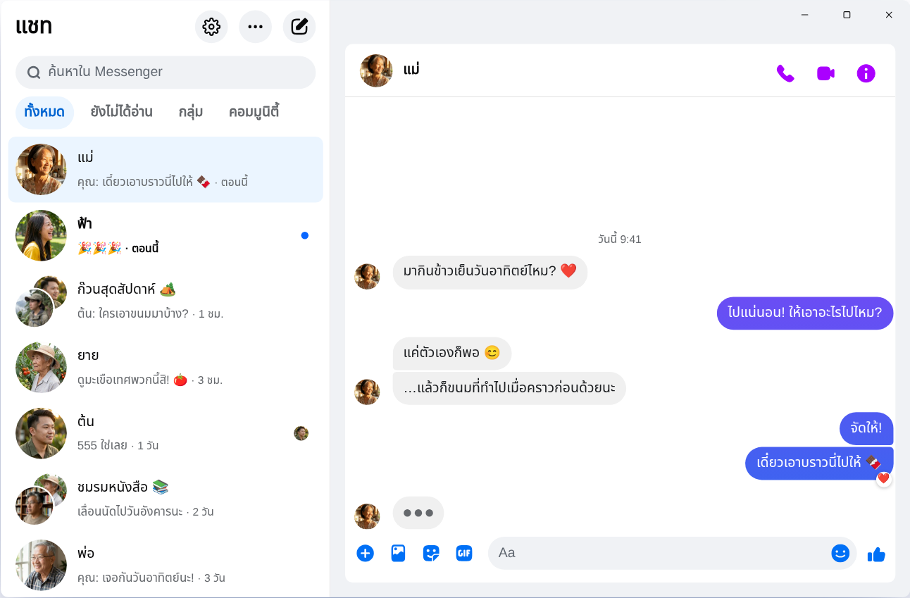

Chatpane / Windows
อัปเดตเดือนพฤศจิกายน 2026
วิธีใช้ Messenger บนคอมในปี 2026
Meta ปิดแอป Messenger สำหรับ Windows ไปตั้งแต่ 15 ธันวาคม 2025 และตอนนี้ messenger.com ก็พาคุณไปที่ Facebook แทน นี่คือวิธีที่ยังใช้ได้บนคอม PC และโน้ตบุ๊กที่ใช้ Windows 10 หรือ 11
ฟรีและเป็นโอเพนซอร์ส · Windows 10 และ 11 · ไม่ใช่แอปของ Meta
คำตอบสั้น ๆ
ตอนนี้ไม่มีแอป Messenger ทางการสำหรับคอมแล้ว Meta ถอดแอปออกจาก Microsoft Store และตั้งแต่เดือนเมษายน 2026 Messenger บนคอมใช้ได้ที่ facebook.com/messages เท่านั้น ซึ่งอยู่ภายใน Facebook
ถ้าอยากได้ Messenger ในหน้าต่างของตัวเอง ไม่มีฟีดหรือ Reels มากวนใจ Chatpane คือแอปฟรีแบบโอเพนซอร์สสำหรับ Windows ที่เปิดแค่แชทของคุณ เป็นโปรเจกต์อิสระ ไม่ใช่ของ Meta
ทำไมวิธีโหลดแบบเก่าถึงใช้ไม่ได้แล้ว
บทความสอนโหลด Messenger ลงคอมหลายแห่งยังบอกให้ค้นหา "Messenger" ใน Microsoft Store หรือโหลดไฟล์ติดตั้ง Messenger 2250.1 จากเว็บดาวน์โหลดโปรแกรม วิธีนี้ไม่ได้ผลแล้ว เพราะนั่นคือแอปที่ Meta ปิดไปเมื่อเดือนธันวาคม 2025 เปิดขึ้นมาก็แค่พาคุณไปที่ Facebook
และอย่ากรอกรหัสผ่าน Facebook ลงในโปรแกรมหรือหน้าเว็บที่ไม่รู้ที่มา ถ้ามีใครเสนอ "Messenger สำหรับ PC" ที่มีหน้าล็อกอินของตัวเอง ให้ระวังไว้ก่อน
เกิดอะไรขึ้นกับ Messenger บน Windows?
ปี 2024 Meta เปลี่ยนแอป Windows เป็นเว็บแอปที่แพ็กมาในรูปแบบแอป เดือนตุลาคม 2025 ประกาศปิดและถอดออกจาก Microsoft Store แล้วแอปก็หยุดทำงานเมื่อ 15 ธันวาคม 2025 ต่อมาในเดือนเมษายน 2026 messenger.com ก็ปิดตามไปด้วย อ่านรายละเอียดและวันที่ทั้งหมดได้ที่ Messenger บนคอมปิดแล้ว เกิดอะไรขึ้น
ทางเลือกของคุณ
วิธีใช้ Messenger บน Windows
Chatpane บน Windows
Chatpane เปิด Messenger ตัวเดียวกับที่คุณเห็นในเบราว์เซอร์ แชท กลุ่ม การโทร และรูปภาพจึงอยู่ครบ และซิงก์กับมือถือของคุณ สิ่งที่หายไปคือส่วนอื่นทั้งหมดของ Facebook
- เฉพาะ Messenger ฟีด Reels Marketplace และช่องค้นหาของ Facebook ถูกซ่อนไว้
- การแจ้งเตือนที่ใช้งานได้จริง ตอบกลับ แสดงความรู้สึก ทำเครื่องหมายว่าอ่านแล้ว หรือปิดเสียงได้จากการแจ้งเตือน โดยไม่ต้องเปิดหน้าต่าง สะดวกเวลาทำงานบนคอมแล้วต้องตอบทั้ง LINE และ Messenger ไปพร้อมกัน
- แถบงานและถาดระบบ จำนวนข้อความที่ยังไม่ได้อ่านบนไอคอน เริ่มทำงานพร้อม Windows และเลือกให้ทำงานต่อในถาดระบบเมื่อปิดหน้าต่างได้
- ความเป็นส่วนตัว ซ่อนสถานะกำลังพิมพ์ ซ่อนชื่อและรูปโปรไฟล์ตอนแชร์หน้าจอ และบล็อกคำขอวิเคราะห์ข้อมูลของ Facebook (เปิดไว้ตั้งแต่แรก)
- ภาษาไทย Chatpane ใช้ภาษาของคอมพิวเตอร์คุณ เมนูและการตั้งค่าจึงเป็นภาษาไทย

วิธีติดตั้ง
- ดาวน์โหลดตัวติดตั้งสำหรับ Windows ถ้าคอมของคุณใช้ชิป ARM ให้ใช้ตัวติดตั้ง ARM64
- เปิดไฟล์ที่ดาวน์โหลดมา ตัวติดตั้ง Chatpane สำหรับ Windows ยังไม่ได้ลงลายเซ็นดิจิทัล SmartScreen จึงอาจขึ้นว่า "Windows protected your PC" ให้คลิก "More info" แล้วคลิก "Run anyway" (บน Windows ภาษาไทยคือ "ข้อมูลเพิ่มเติม" และ "เรียกใช้ต่อไป") ดาวน์โหลด Chatpane จาก chatpane.app หรือ GitHub เท่านั้น
- ลงชื่อเข้าใช้ด้วยบัญชี Facebook เดิมของคุณ แชทจะขึ้นมาทันที
ไม่อยากติดตั้งอะไรเลย? เวอร์ชันพกพา (.zip) ใช้งานได้โดยไม่ต้องติดตั้ง
คำถามที่พบบ่อย
คำถามเรื่อง Messenger บนคอม
Chatpane ฟรีไหม?
ฟรี ไม่มีค่าใช้จ่าย ไม่มีค่าสมาชิก และไม่มีโฆษณา Chatpane เป็นโอเพนซอร์สภายใต้สัญญาอนุญาต MIT และโค้ดเผยแพร่อยู่บน GitHub ให้ทุกคนตรวจสอบได้
นี่คือแอป Messenger ทางการหรือเปล่า?
ไม่ใช่ Chatpane เป็นโปรเจกต์อิสระ ไม่เกี่ยวข้องกับ Meta แอปนี้แสดง Messenger ตัวจริงจาก facebook.com/messages ในหน้าต่างของตัวเอง ข้อความของคุณจึงยังส่งผ่าน Messenger และเงื่อนไขของ Meta ก็ยังมีผลเหมือนเดิม
ไม่มีบัญชี Facebook ใช้ได้ไหม?
ไม่ได้ ตั้งแต่เดือนเมษายน 2026 Meta ให้ใช้ Messenger โดยไม่มีบัญชี Facebook ได้เฉพาะในแอปบนมือถือ บนคอม ทั้ง Chatpane และวิธีอื่นทุกวิธีต้องใช้บัญชีที่เข้า facebook.com ได้
ใช้กับ Windows 10 ได้ไหม?
ได้ ทั้ง Windows 10 และ 11 Chatpane ใช้ Microsoft Edge WebView2 ซึ่งมีอยู่แล้วใน Windows 11 ส่วนบน Windows 10 ตัวติดตั้งจะดาวน์โหลดให้ถ้ายังไม่มี
วิดีโอคอลได้ไหม?
ได้ เพราะนี่คือ Messenger เต็มรูปแบบ การโทรด้วยเสียงและวิดีโอคอลจะเปิดในหน้าต่างของตัวเอง เหมือนบน facebook.com
รับ Chatpane มาใช้เลย
ฟรีและเป็นโอเพนซอร์ส ดาวน์โหลดเสร็จในไม่กี่วินาที - ขนาดเพียงประมาณ 4 MB
ตัวเลือกอื่น: portable .zip · ARM .exe · ARM .zip
ใช้ Intel Mac รุ่นเก่าอยู่เหรอ? Intel .dmg
รายการทั้งหมดพร้อม checksum อยู่บน
GitHub
- หรือ brew install --cask kristofferR/tap/chatpane